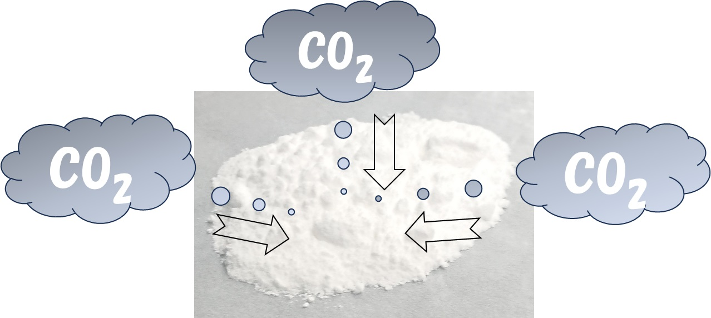

"The ceramic powder made with this technology can absorb carbon dioxide, which is present in the atmosphere at only 400 ppm, simply by coming into contact with the air at room temperature. The absorbed carbon dioxide can be separated and recovered by heating, and the ceramic powder after separation and recovery can repeatedly absorb carbon dioxide. Because it is a solid, it will not volatilize or decrease even when exposed to the atmosphere for long periods of time. It is a safe and secure material as it is composed of elements that are harmless to the human body."
This technology can be used to capture carbon dioxide from the air in factories or other facilities. It’s easy to reuse and helps reduce greenhouse gas emissions.
The next step is to make the material even more efficient and to use it on a larger scale to support a cleaner environment.
Sumitomo Expo - Massive carbon dioxide absorption technology using ceramic powder